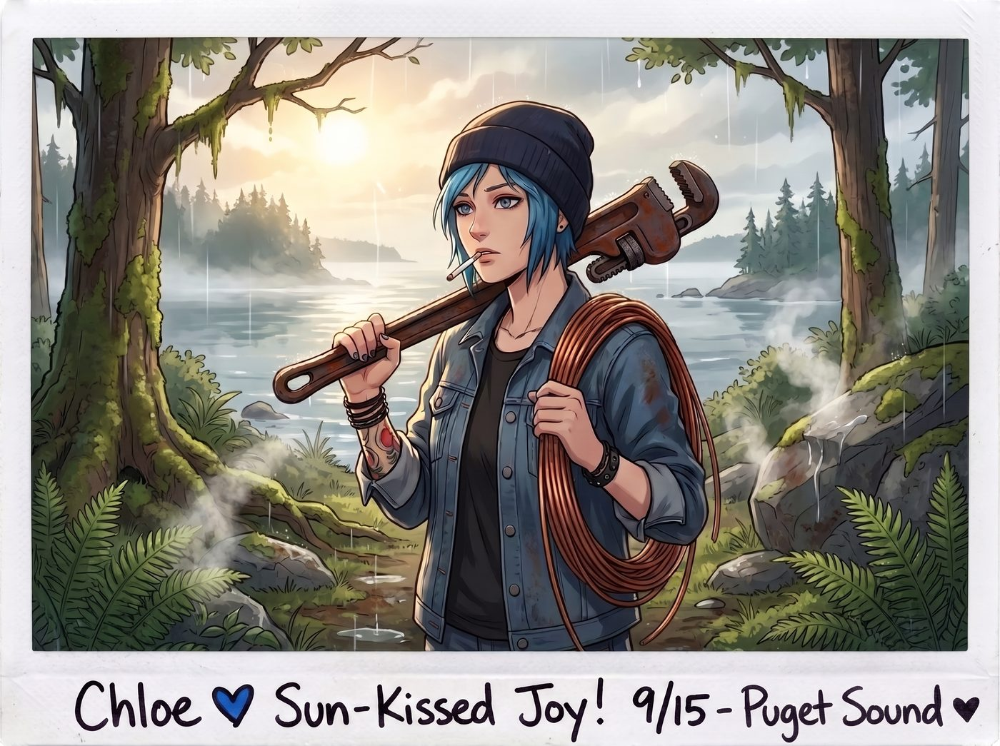
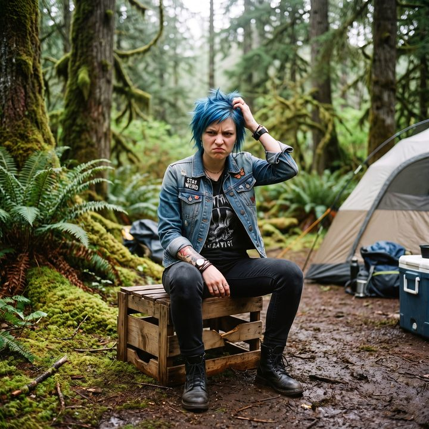

良性腫瘤原則


雨過天晴的清晨，奧林匹亞半島難得迎來了一抹蒼白的陽光。
Chloe 叼著一根沒點燃的香菸，肩膀上扛著一把重型管鉗，手裡拎著一捆粗壯的工業級銅線，正用一種極度危險的、打量肥羊的眼神，盯著不遠處那排正貪婪吸收著陽光的次世代商用太陽能實驗板。
一、狂野的改裝計畫
「我昨晚算過了，」Chloe 轉頭看向正在工作台前優雅地敲擊鍵盤的 Lily，「這玩意兒的功率大得離譜。如果我物理繞過它們的輸出限制器，分流百分之四十的電力，然後把最邊緣那兩塊子機板拆下來改裝到我的皮卡上……我們不僅能無限續航，我還能帶動一台廢舊伺服器來挖礦。」
Chloe 興奮地揮舞了一下管鉗：「反正妳會行政黑魔法嘛！妳就寫個報告，說昨晚有隻變異棕熊襲擊了營地，或者說這破地方濕氣太重導致主機板自燃了。憑妳的本事，從能源部再騙兩塊新板子過來還不是分分鐘的事？」
說完，Chloe 轉身就要朝著那排價值不菲的測試設備走去。
「Chloe 學姐，請放下管鉗。」
一個軟糯、平靜，卻帶著某種不容置疑的冰冷力量的聲音，在 Chloe 背後響起。
Chloe 停下腳步，轉過頭。只見 Lily 已經合上了筆記本電腦。她沒有像往常那樣帶著乖巧的微笑，反光圓框眼鏡後的眼神裡，透著一種外科醫生面對即將引爆手榴彈的病患時的嚴肅。
「怎麼了？妳的合規法條裡沒有變異棕熊襲擊這一項嗎？」Chloe 挑了挑眉，滿不在乎地說，「自己加一條進去不就好了？」
二、物理邊界的科普
Lily 輕輕嘆了口氣，從高腳凳上滑下來，走到 Chloe 面前。她伸出那雙蒼白纖細的手，輕輕地、卻無比堅定地握住了 Chloe 手裡的重型管鉗。
「學姐，我必須向妳澄清一個基礎概念。」Lily 直視著 Chloe 的眼睛，語氣輕柔得像是在唸床邊故事，「行政黑魔法，本質上並不是魔法。它是基於系統漏洞、官僚惰性和人類心理學的一種欺詐性平衡。它是有物理邊界的，而且這個邊界極度脆弱。」
Chloe 皺起眉頭：「什麼意思？妳昨天不是剛黑了對方四萬多美金的咖啡錢嗎？」
「這正是問題的關鍵。」Lily 豎起一根手指，開始了她那令人毛骨悚然的精密科普。
「在政府的資產負債表上，四萬兩千美金的後勤開銷，被歸類為營運支出。對於擁有龐大預算的聯邦機構來說，這筆錢連系統演算法的警報閾值都觸碰不到。它就像大象皮膚上的一隻寄生蟲，大象雖然覺得癢，但懶得去抓，因為抓癢的動作所消耗的力氣，比被吸走的血還要多。這就是官僚系統的惰性原則。」
Lily 停頓了一下，指了指 Chloe 手裡的管鉗和遠處的太陽能板。
「但如果妳拆走一塊面板，或者物理改變了電網結構，性質就完全變了。面板屬於高價值固定資產。資產的遺失或損毀，會直接觸發對方系統的一級實體審計。」
Lily 的聲音慢慢沉了下來，帶著一絲不易察覺的寒意，彷彿又想起了警車閃爍的紅藍燈光：「一旦觸發實體審計，我的那些試算表、免稅條款和合規聲明，都會在瞬間化為廢紙。因為上面派來的將不再是帶著公文包、按規矩辦事的 Thorne 博士……而是全副武裝、帶著搜查令的聯邦調查人員。他們不會看我的報告裡有沒有棕熊，他們只會清點庫存，然後以危害安全與破壞公共設施的重罪，把我們全部送進監獄。」
三、觀察者效應
Chloe 愣住了。她看著眼前這個十九歲的女孩，第一次清晰地意識到——Lily 的運籌帷幄，是建立在走鋼索般的極度理智之上的。
「行政黑魔法的極限，就在於絕對不能改變物理現實。」Lily 輕輕從 Chloe 鬆開的手裡抽走管鉗，放在一旁的地上。「我們可以在帳面上把白說成黑，可以合法地榨乾他們的活動資金，前提是——那台設備必須完好無損地站在那裡，每個月按時向對方發送那幾K的無聊測試數據。我們要維持一切正常的幻覺。這就像量子力學裡的觀察者效應：只要我們不搞出物理破壞，我們就處於薛丁格的合法與非法之間；但妳一旦動了管鉗，就等於強迫系統觀察我們，我們就會立刻坍縮成罪犯。」
Chloe 煩躁地抓了抓藍色的短髮，一屁股坐在營地的破木箱上。「所以，妳這聽起來牛逼轟轟的黑魔法，說到底也就是當個小心翼翼的吸血鬼？我們只能吸血，不能殺羊？」
「準確地說，是當一顆良性腫瘤。」Lily 露出了一個重新變得乖巧的微笑，推了推圓框眼鏡，「如果腫瘤長得太快、太具有侵略性，就會引起宿主免疫系統的注意，最終玉石俱焚；但如果我們把體積控制在臨界點之下，安靜地待在角落裡，我們就能永遠免費享受宿主的養分。」
一直拿著拍立得相機站在旁邊聽的 Max，這時忍不住笑了出來，按下快門，拍下了 Chloe 一臉吃癟的表情。「放棄吧，Chloe。在如何在不坐牢的前提下合法地做個混蛋這個領域，Lily 可是博士後等級的。」
「切，無聊的合規社會。」Chloe 雖然嘴上抱怨著，但還是把那捆粗銅線踢到了一邊，算是徹底放棄了她那狂野的改裝計畫。
四、燃油補貼的安撫
Lily 彎下腰，撿起地上的管鉗，用衣袖仔細擦去上面的泥土。「感謝學姐的理解。為了彌補妳未能進行物理改裝的遺憾，我已經在預算表裡，用周邊安全巡邏車輛油耗補貼的名義，為妳的皮卡申請了每個月八百加侖的免費高級燃油。大概下週，指定的油罐車就會來為我們加滿油庫了。」
Chloe 的眼睛瞬間亮了起來，剛才的鬱悶一掃而空。她一把摟住 Lily 的肩膀，用力揉了揉女孩的頭髮。「靠，實習生，我就知道妳才是我們之中最瘋的那個！良性腫瘤萬歲！」
被摟住的 Lily 有些僵硬，但這次她沒有出現那種應激的閃避動作。她只是無奈地推了推又被弄歪的眼鏡，輕聲說道：「請不要過度搖晃行政人員，學姐，這會降低我計算燃油稅務減免的精確度……」